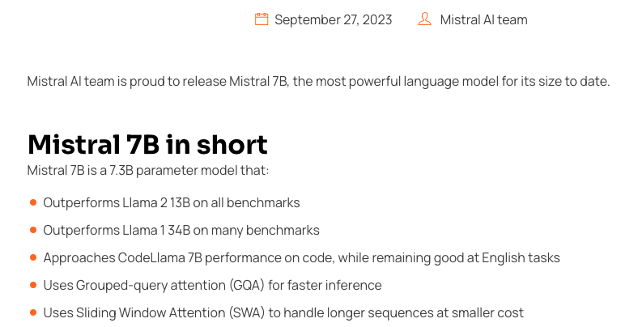

Retrieval Augmented Generation#
Retrieval Augmented Generation (RAG) is a powerful paradigm in natural language processing that combines the strengths of information retrieval and language generation. This approach involves retrieving relevant information from a large dataset and using that information to enhance the generation of accurate text. It can be used as another method to fine-tune your models.
The phrase Retrieval Augmented Generation comes from a recent paper by Lewis et al. from Facebook AI. The idea is to use a pre-trained language model (LM) to generate text, but to use a separate retrieval system to find relevant documents to condition the LM on.
How it Works#
From start to finish, the RAG relies on 5 steps:

1. Load
Load documents from different source files (urls, csvs, pdfs, text) in diverse locations (s3 storage, public sites, etc.)
2. Transform
Retrieval also involves determining the relevant parts of documents. To prepare larger document for retrieval it is often necessary to split or chunk the data.
3. Embed
Next embeddings must be created for documents to capture the semantic meaning of the text. This later enables mdoels to efficiently find other pieces of text that are similar.
4. Store
Vector stores support efficient storage and search of document embeddings.
5. Retrive
One the data is organized, the relevant information is retrieved to produce more informed and context-aware responses.
During runtime, this blending of retrieval and generation enhances the richness and relevance of the generated content.

Taken from: https://docs.llamaindex.ai/en/stable/_static/getting_started/basic_rag.png
Sample Uses Cases#
Question Answering Systems:
Retrieve information from vast knowledge bases, such as multiple pdfs or csv files. (example today)Content Creation:
Enhance the generation of creative and informative text by pulling in relevant details from a wide range of sources.Conversational Agents:
Incorporate external knowledge into responsesCode Generation:
Assist in generating code snippets by retrieving information from programming knowledge bases.Prevent Hallucinations:
Bring in external knowledge to check whether a GPT response is a hallucination.
Example: Retrieving Information Non-existent in Training#
One way to use RAG is to feed the LLM with up-to-date information.
The Llama 2 was trained between January 2023 and July 2023. The Mistral 7B model was released in September, 2023. Let’s ask LLama2 a question about the Mistral 7B model.
# Run the query throught Llama2 13B chat model with test_llama2.py
query = "[INST]What is a Mistral 7B language model?[/INST]"
Output:
[INST]What is a Mistral 7B language model?[/INST] I’m not familiar with a “Mistral 7B language model.” It’s possible that this is a custom or proprietary language model developed by a specific organization or individual, and not a widely known or used model.
There are many language models available, each with their own strengths and weaknesses, and it’s important to choose the right model for your specific use case. Some popular language models include BERT, RoBERTa, XLNet, and transformers. These models have been pre-trained on large datasets and can be fine-tuned for specific tasks such as sentiment analysis, question answering, and text classification.
If you have any more information about the Mistral 7B language model, such as its capabilities, performance, or the organization that developed it, I may be able to provide more assistance.
The release of Mistral 7B language model can be found here: https://mistral.ai/news/announcing-mistral-7b/

To resolve this, we can use RAG to feed details about the release note. The code below will take the contents of a webpage and follow the 5 steps outlined above to retrieve the relevant information.
# === Load libraries
from pathlib import Path
import os
import logging
import sys
from llama_index.core import VectorStoreIndex, SimpleDirectoryReader
from llama_index.core import StorageContext, load_index_from_storage
from llama_index.core import ChatPromptTemplate
from llama_index.core.response_synthesizers import TreeSummarize
from llama_index.embeddings.openai import OpenAIEmbedding
from llama_index.core.node_parser import SentenceSplitter
from llama_index.llms.huggingface import HuggingFaceLLM
from llama_index.core.llms import ChatMessage, MessageRole
import faiss
from llama_index.vector_stores.faiss import FaissVectorStore
import torch
import requests
from bs4 import BeautifulSoup
logging.basicConfig(stream=sys.stdout, level=logging.INFO)
logging.getLogger().addHandler(logging.StreamHandler(stream=sys.stdout))
# Download web content
url_link = "https://mistral.ai/news/announcing-mistral-7b/"
response = requests.get(url_link)
soup = BeautifulSoup(response.content, 'html.parser')
webpage_content = soup.get_text().strip()
data_folder = Path("./test_data")
if not data_folder.exists():
data_folder.mkdir()
txt_file = data_folder / "webpage_content.txt"
with open(txt_file, "w") as f:
f.write(webpage_content)
# openAI api key for using their embedding model
api_file = ".env"
with open(api_file, 'r') as f:
os.environ['OPENAI_API_KEY'] = f.read().strip()
# Settings for embedding model
embedding_model = "text-embedding-3-small"
embed_model = OpenAIEmbedding(model=embedding_model)
embedding_chunk_size = 512
# 1. Load
documents = SimpleDirectoryReader(data_folder).load_data()
# Set up FAISS vector store
d = 1536 # embedding dimension
faiss_index = faiss.IndexFlatL2(d)
vector_store = FaissVectorStore(faiss_index=faiss_index)
storage_context = StorageContext.from_defaults(vector_store=vector_store)
# 4. Store
index = VectorStoreIndex.from_documents(
documents,
# 2. Transform
transformations=[SentenceSplitter(chunk_size=embedding_chunk_size)],
# 3. Embed
embed_model=embed_model,
storage_context=storage_context
)
# Settings for LLM
LLAMA2_13B_CHAT = "/kellogg/data/llm_models_opensource/llama2_meta_huggingface/models--meta-llama--Llama-2-13b-chat-hf/snapshots/29655417e51232f4f2b9b5d3e1418e5a9b04e80e"
selected_model = LLAMA2_13B_CHAT
llm = HuggingFaceLLM(
context_window=4096,
max_new_tokens=256,
tokenizer_name=selected_model,
model_name=selected_model,
device_map="auto",
)
# 5. Retrieve
query_engine = index.as_query_engine(
llm = llm,
)
print("====================================")
print(f"Selected LLM: {selected_model}")
query = "What is a Mistral 7B language model?"
response = query_engine.query(query)
print("====================================")
print(f"Query: {query}")
print("Response: ")
print(response)
print("====================================")
Output:
Selected LLM: /kellogg/data/llm_models_opensource/llama2_meta_huggingface/models–meta-llama–Llama-2-13b-chat-hf/snapshots/29655417e51232f4f2b9b5d3e1418e5a9b04e80e
INFO:httpx:HTTP Request: POST https://api.openai.com/v1/embeddings “HTTP/1.1 200 OK”
HTTP Request: POST https://api.openai.com/v1/embeddings “HTTP/1.1 200 OK”
====================================
Query: What is a Mistral 7B language model?
Response:
Mistral 7B is a 7.3B parameter model that is a powerful language model for its size, outperforming Llama 2 13B on all benchmarks and approaching CodeLlama 7B performance on code. It uses Grouped-query attention (GQA) for faster inference and Sliding Window Attention (SWA) to handle longer sequences at smaller cost. It is released under the Apache 2.0 license and can be used without restrictions.